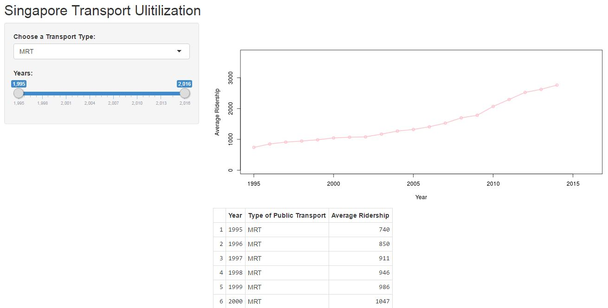

Assignment for Developing Data Products Course Project: Shiny Application and Reproducible Pitch. The application should use shiny and allow user to enter data. The chart or data should show the filtered data according to user's inpput.
May 15 2016
May 15 2016
Assignment for Developing Data Products Course Project: Shiny Application and Reproducible Pitch. The application should use shiny and allow user to enter data. The chart or data should show the filtered data according to user's inpput.
Analyse the transportation system in singapore for the past 10 years.
https://data.gov.sg/dataset/public-transport-utilisation-average-public-transport-ridership
Filtering Criteria
Transport Type - Dropdown
Year - Slider
Application URL
Use renderPlot, plot and lines() to plot a line chart for each transport type
Show Data in table
Use sqldf to select data according to the relevant input passed to the shiny server
Use renderTable
##Screenshot
